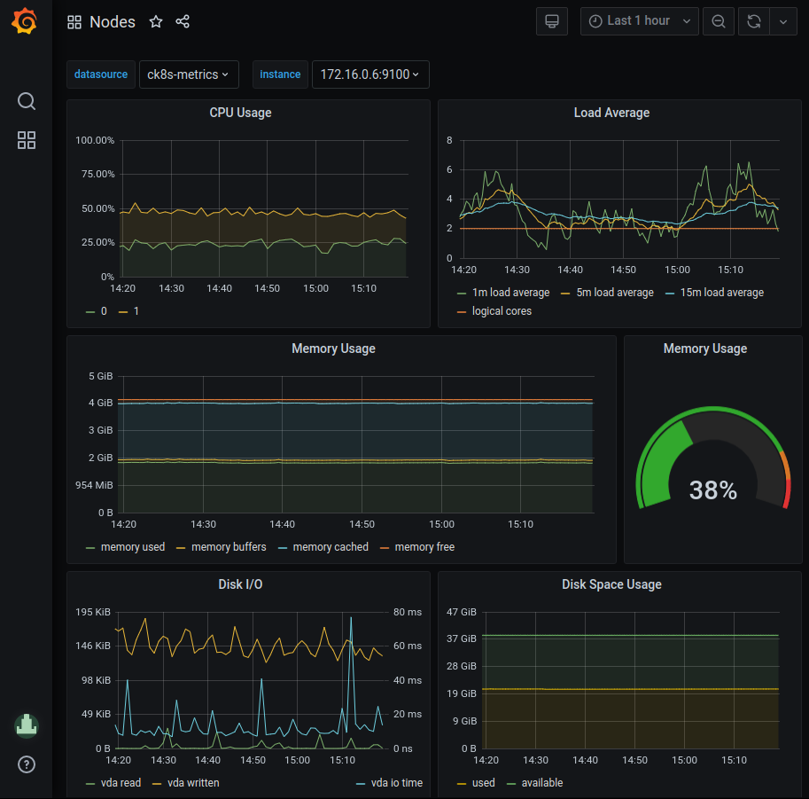

Metrics¶
This guide gives an introduction to Prometheus and Grafana and where they fit in Compliant Kubernetes, in terms of reducing the compliance burden.
Why Prometheus and Grafana?¶
Prometheus is an open-source solution for monitoring and alerting. It works by collecting and processing metrics from the various services in the cluster. It is widely used, stable, and a CNCF member. It is relatively easy to write ServiceMonitors for any custom services to get monitoring data from them into Prometheus.
Grafana is the most widely used technology for visualization of metrics and analytics. It supports a multitude of data sources and it is easy to create custom dashboards. Grafana is created by Grafana Labs, a CNCF Silver Member.
Compliance needs¶
The requirements to comply with ISO 27001 are stated in ISO 27001:2013 The annexes that mostly concerns monitoring and alerting are Annex 12, article A.12.1.3 "capacity management", and Annex 16 which deals with incident management.
Capacity management¶
Article A.12.1.3 states that "The use of resources must be monitored, tuned and projections made of future capacity requirements to ensure the required system performance to meet the business objectives."
- Promethus and Grafana helps with this as the resource usage, such as storage capacity, CPU, and network usage can be monitored. Using visualization in Grafana, projections can be made as to future capacity requirements.
The article goes on to say that "Capacity management also needs to be: Pro-active – for example, using capacity considerations as part of change management; Re-active – e.g. triggers and alerts for when capacity usage is reaching a critical point so that timely increases, temporary or permanent can be made."
- Prometheus has a rich alerting functionality, allowing you to set up alerts to warn if, for example, thresholds are exceeded or performance is degraded.
Incident management¶
Annex A.16.1 is about management of information security incidents, events and weaknesses. The objective in this Annex A area is to ensure a consistent and effective approach to the lifecycle of incidents, events and weaknesses. Incidents needs to be tracked, reported, and lessons learned from them to improve processes and reduce the possibility of similar incidents occurring in the future.
Prometheus and Grafana can help with this by making it easier to:
- collect evidence as soon as possible after the occurrence.
- conduct an information security forensics analysis
- communicate the existence of the information security incident or any relevant details to the leadership.
Prometheus and Grafana in Compliant Kubernetes¶
Prometheus¶
Compliant Kubernetes installs the prometheus-operator by default. The Prometheus Operator for Kubernetes provides easy monitoring definitions for Kubernetes services and deployment and management of Prometheus instances as it can create/configure/manage Prometheus clusters atop Kubernetes. The following CRDs are installed by default.
| crd | apigroup | kind | used by | description |
|---|---|---|---|---|
| alertmanagers | monitoring.coreos.com | Alertmanager | prometheus-alerts | |
| podmonitors | monitoring.coreos.com | PodMonitor | customer-rbac | |
| prometheuses | monitoring.coreos.com | Prometheus | ||
| prometheusrules | monitoring.coreos.com | PrometheusRule | customer-rbac, elasticsearch | |
| servicemonitors | monitoring.coreos.com | ServiceMonitor | customer-rbac, dex, grafana, kibana, elastisearch, influxdb | |
| thanosrulers | monitoring.coreos.com | ThanosRuler |
Accessing Prometheus¶
The web interface is not exposed by default in Compliant Kubernetes. In order to access it, the most straight-forward way is to use port forwarding via the Kubernetes API.
kubectl -- -n monitoring port-forward prometheus-prometheus-operator-prometheus-0 9090:9090
Depending on your Compliant Kubernetes settings, access to the Prometheus server might have been disabled by the administrator.
Grafana¶
Grafana can be accessed at the endpoint provided by the Compliant Kubernetes install scripts. If you have configured dex you can login with a connected account.
Compliant Kubernetes deploys Grafana with a selection of dashboards by default. Dashboards are accessed by clicking the Dashboard icon (for squares) at the lefthand side of the grafana window and selecting Manage. Some examples of useful dashboards are listed below.
Node health¶
The Nodes dashboard (Nodes) gives a quick overview of the status (health) of a node in the cluster. By selecting an instance in the "instance" dropdown metrics for CPU, Load, Memory, Disk and Network I/O is showed for that node. The time frame can be changed either by using the time dropdown or selecting directly in the graphs.

Pod health¶
The Pods dashboard (Kubernetes/Compute resources/Pods) gives a quick overview of the status (health) of a pod in the cluster. By selecting a pod in the "pod" dropdown metrics for CPU, Memory, and Network I/O is showed for that node. The time frame can be changed either by using the time dropdown or selecting directly in the graphs.

Running Example¶
The user demo already includes a ServiceMonitor, as required for Compliant Kubernetes to collect metrics from its /metrics endpoint:
{{- if .Values.serviceMonitor.enabled -}}
apiVersion: monitoring.coreos.com/v1
kind: ServiceMonitor
metadata:
name: {{ include "ck8s-user-demo.fullname" . }}
labels:
{{- include "ck8s-user-demo.labels" . | nindent 4 }}
spec:
selector:
matchLabels:
{{- include "ck8s-user-demo.selectorLabels" . | nindent 6 }}
endpoints:
- port: http
{{- end }}
The screenshot below shows a Grafana dashboard featuring the query rate(http_request_duration_seconds_count[1m]). It shows the request rate for the user demo application for each path and status code. As can be seen, the /users endpoint is getting popular.

Note
You may want to save frequently used dashboards. Compliant Kubernetes saves and backs these up for you.
Further reading¶
For more information please refer to the official Prometheus and Grafana documentation.